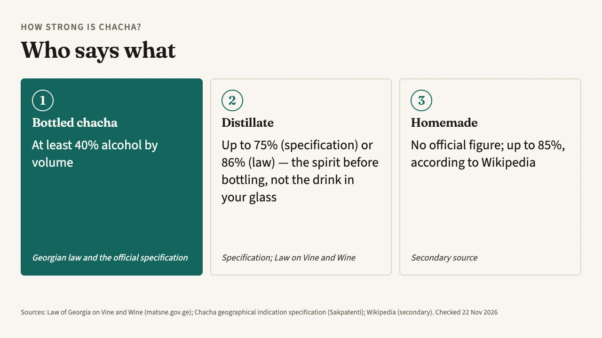
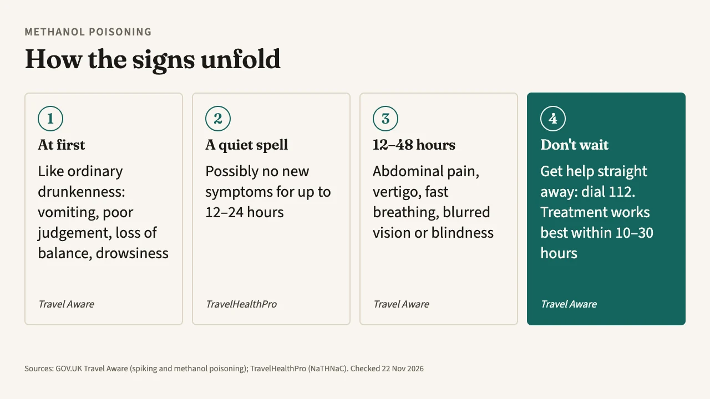
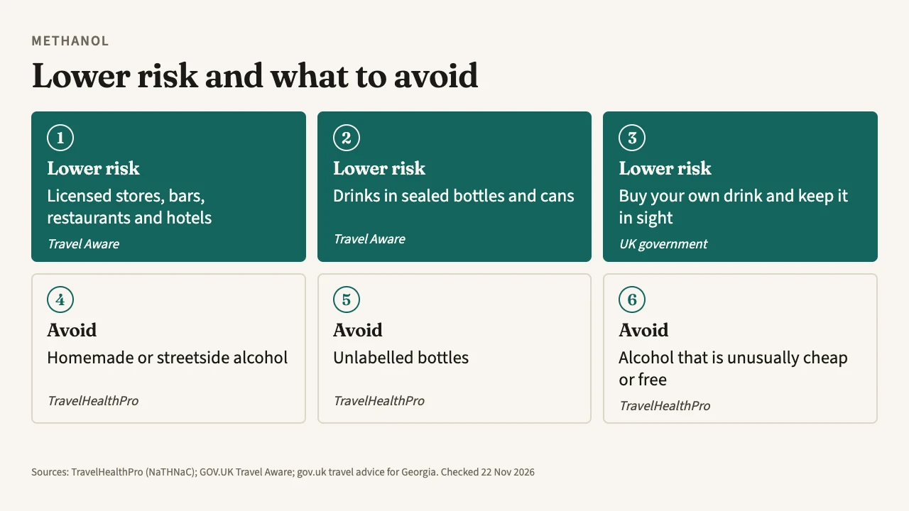
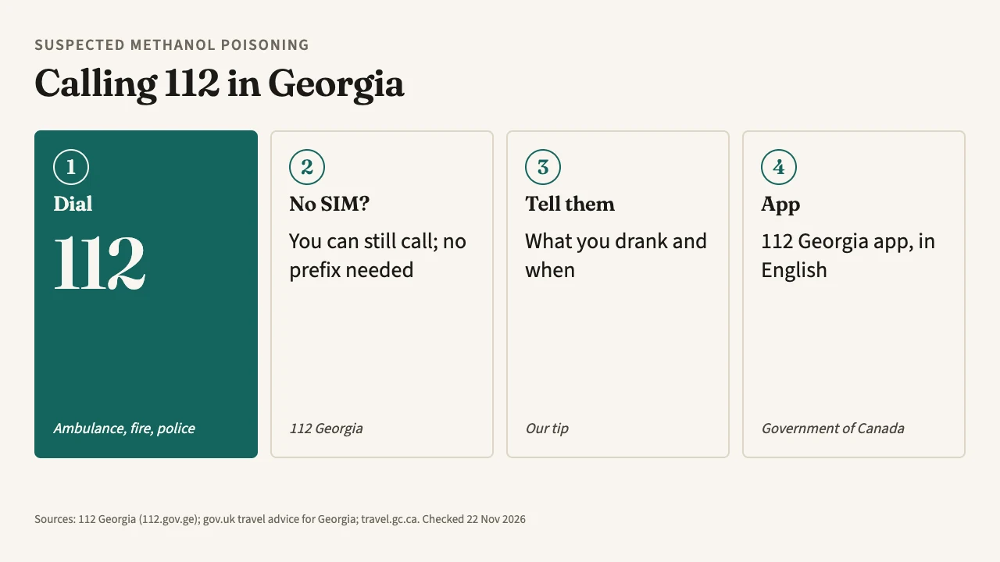
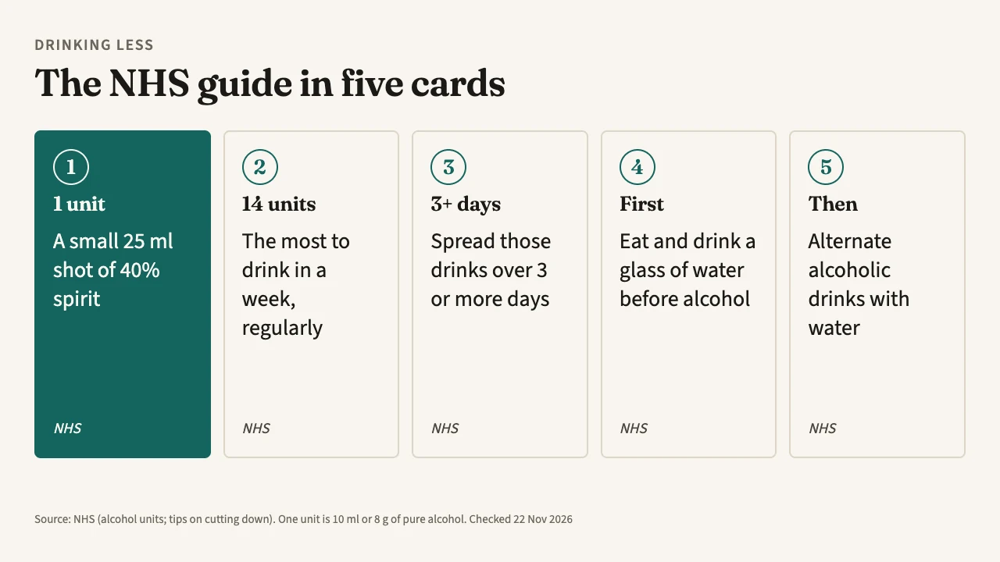

- Minimum strength of bottled chacha
- 40%
- Protected name registered
- 2011
- Suspected methanol poisoning
- 112 at once
- NHS weekly guideline
- 14 units
- Emergency
- 112
This page is about Georgia the country, not the US state, and is part of the Georgia Travel Guide. Checked on 22 November 2026.
What is chacha? Georgia's grape spirit
Georgian chacha (sometimes spelled cha cha) is a strong drink made from grapes. The official specification calls it "the Georgian traditional spirit", made from the "peels and pits of grapes" (pomace), and Georgian law treats the chacha drink as an alcoholic beverage of grape origin.

How it is made. Under the Law on Vine and Wine, it is produced by distilling the "fermented, squeezed or non-squeezed pulp". Under the specification, only chacha spirit may be used: no other spirit may be added, and sugar or alcohol content may not be raised artificially.
At the table. If you are invited to a supra, the Georgian feast, read how toasts and drinks work in The Supra, Wine and Drinks before you go.
Is chacha vodka or brandy?
The law uses both words. It lists "brandy, vodka ('chacha'), strong drink" among alcoholic beverages of grape origin, and it sets the rules for the drink under the name "grape vodka".
Why "Chacha" is a protected name
It is a registered geographical indication. "Chacha" is entry No. 1 on the register kept by Sakpatenti, the Georgian intellectual property office, with a registration date of 13 December 2011.
Where the grapes come from. Under the specification, the grapes come from ten regions: Kakheti, Lechkhumi, Kartli, Guria, Meskheti, Samegrelo, Imereti, Abkhazia, Racha and Achara.
Where it is made. Distilling and bottling happen "only within the territory of Georgia".
How strong is chacha?
A bottle on sale must be at least 40% alcohol by volume (ABV). Georgian law and the official specification both set this minimum.
Higher figures are for the distillate. The specification caps the freshly distilled product at 75%, and the law sets 86% as the ceiling for the distillate. These limits apply to the distillate, not to the drink you buy.
Our tip. Go by the strength printed on a sealed bottle, not by a number someone quotes at the table.
How strong is homemade chacha?
No one can tell you: an unlabelled bottle gives no clue, and there is no official figure. According to Wikipedia, home brew can reach 85%.
Our tip. If someone pours from a bottle with no label, say no. With a labelled bottle, take small sips, with food and water; see how to drink it below.

Homemade chacha and methanol: what is the risk?
Methanol in illegal or fake drinks is the risk, and it is very hard to detect. TravelHealthPro is the UK's travel health service. Its advice: "Avoid homemade or streetside alcohol and do not drink from unlabelled bottles." The UK Foreign Office adds, in its campaign of 15 July 2026: "use reputable venues, purchase sealed drinks and avoid homemade alcohol or free shots".
We found no official reports on methanol poisoning in the country; the advice below is general UK and WHO advice for travellers.
What it is. In TravelHealthPro's words: "Methanol is a clear, colourless liquid. It is used in industrial products, like antifreeze and some cleaning products."
How it gets into drinks. The World Health Organization notes that outbreaks of poisoning often occur when methanol "is used to adulterate illegally produced alcoholic beverages". TravelHealthPro adds that it is occasionally found in counterfeit copies of well-known brands.
Can you tell if a drink has methanol in it?
Not reliably. TravelHealthPro says it is "very hard to detect" and "can look, taste and smell similar to alcohol". The UK's Travel Aware campaign adds that at first it can affect you "in the same ways as ‘real’ alcohol".
The official advice gives no home test, so judge the bottle and where it came from, not the glass.
Signs of methanol poisoning and how quickly they start
Early signs look like being drunk; the serious ones can come many hours later. The UK's Travel Aware campaign lists:
- "Early signs: vomiting, poor judgement, loss of balance and drowsiness."
- "12-48 hours after drinking: abdominal pain, vertigo, hyperventilation, breathlessness, blurred vision and/or blindness…"
A quiet gap. According to TravelHealthPro, at first, symptoms of methanol poisoning are similar to those of alcohol poisoning, and people "may not experience any further symptoms for up to 12–24 hours".
The eyes and worse. It also lists "blurred vision, trouble looking at bright lights or even blindness, seizures or unconsciousness" among the later problems.
Don't wait. Feeling better after the first hours is not a reason to stay at home: get help at once.

How to lower the risk
Buy sealed drinks from licensed places and skip anything unlabelled. Official UK advice comes down to three points:
- buy drinks "from licenced stores, bars, clubs, restaurants and hotels";
- buy sealed drinks and turn down free shots;
- skip streetside drinks and unlabelled bottles.
Spiking. GOV.UK's travel advice warns: "Buy your own drinks and always keep sight of them to avoid them being spiked." More in Drink Spiking and Home-Made Spirits and Bars, Drinks and the Bill.
Our tip. At a home supra you can politely say no, or ask for wine instead. Keep track of which bottle your glass was filled from.

Suspect methanol poisoning? Call 112 straight away
"Get medical help straight away," says Travel Aware. Call 112 and ask for an ambulance.
Timing. Travel Aware says don't wait to "see if it gets better" or "go to bed and try to sleep it off". "Treatment is most effective within 10–30 hours of drinking methanol." TravelHealthPro adds that if hangover-like symptoms are not improving, you should "seek emergency medical help immediately".
What official advice says. The UK government lists the same number for "ambulance, fire, police". The Government of Canada advises: "In case of emergency, dial 112. You can also use the 112 Georgia mobile application to contact emergency service providers in English."
How the line works. The line's own website calls it "a single emergency number", dialled "without any prefix". In its words, "Calling is possible even when there is no SIM card in the mobile phone". It asks people to call "only in the event of an emergency"; a suspected poisoning is one.
On the phone. What to say is in What to Tell the Operator. Without a SIM card, or if you can't talk, see No SIM Card, No Credit or Can't Talk: the 112 App.

Our tip. Tell the operator what was drunk and when. If the bottle is still there, take it with you. Don't leave the person alone to sleep.
With suspected methanol poisoning, never wait for an appointment.
For a health question that can wait, you can browse doctors and clinics in Tbilisi.
How to drink chacha without overdoing it
Slowly, in small amounts, with food and water. The NHS counts a "Single small shot of spirits (25ml, ABV 40%)" as 1 unit and advises: "Try to have something to eat, and drink a glass of water, before you have alcohol."
The weekly guideline. The NHS advises men and women "not to drink more than 14 units a week on a regular basis", spread over 3 or more days. One unit is "10ml or 8g of pure alcohol". A bottle without a label has an unknown strength, so you cannot count its units either.
Pace yourself. The NHS suggests you "Alternate alcoholic drinks with water or other non-alcoholic drinks" and "go for smaller sizes".
A bad hangover. If a hangover after a drink from an unlabelled bottle is not getting better, that is a reason to get help, not to sleep it off.
Tastings. If your trip includes a wine tasting, read Wine Tasting Without the Hangover: NHS Advice. For wine country, see the Telavi Travel Guide.
Our tip. At a supra you don't have to drain your glass at every toast; a sip counts. Before the first glass, agree who will stay sober and take the wheel.

Can you drink chacha and drive in Georgia?
No. The UK government's safety advice says: "Georgia has a lower blood alcohol content limit than the UK, so avoid alcohol if driving." It adds: "Drink driving punishments can be severe."
The Canadian view. The Government of Canada warns: "Georgia has a zero-tolerance policy for drinking and driving." It lists heavy fines, detention and a ban "for several months or years" among the penalties.
No figure. The UK government says only that the limit is lower than the UK's, and the Government of Canada describes a zero-tolerance policy. More in Drink Driving.
Our tip. After a long supra the night before, don't plan an early start at the wheel.
Taking chacha home: UK airport and customs rules
At most UK airports, a bottle will not pass security in hand luggage unless it is a sealed duty-free purchase. GOV.UK says: "At most airports, you cannot take liquids in containers larger than 100ml through security." Duty-free bottles can go through if they are sealed in a security bag at purchase, with the receipt visible in the bag.
Arriving in Great Britain. From outside the UK, you can bring in 4 litres of drinks over 22% ABV without paying duty.
Leaving the country. These are UK rules for UK airports. We found no official Georgian rules on taking bottles out of the country or through its airports; check with your airline.
Our tip. Put a sealed bottle in checked luggage, wrapped in clothes, and keep the receipt.
Frequently asked questions
What is chacha?
How strong is chacha?
Is homemade chacha safe to drink?
Can you tell if a drink contains methanol?
How quickly do symptoms of methanol poisoning start?
Can I drink chacha and drive?
How do you drink chacha?
Sources
- Sakpatenti: specification of the geographical indication "Chacha" (copy hosted on GOV.UK) ↑
- Law of Georgia on Vine and Wine (consolidated, Matsne) ↑
- TravelHealthPro: Methanol poisoning ↑
- Travel Aware (UK government): Spiking and methanol poisoning ↑
- GOV.UK foreign travel advice — safety and security ↑
- Sakpatenti: state register of geographical indications ↑
- Wikipedia: Chacha (brandy) (secondary source) ↑
- GOV.UK: UK government launches campaign to prevent methanol poisoning abroad (15 July 2026) ↑
- World Health Organization: INFOSAN quarterly summary 2020 #2 (29 July 2020) ↑
- GOV.UK foreign travel advice — health ↑
- GOV.UK foreign travel advice — getting help ↑
- Government of Canada: travel advice for Georgia (updated 27 August 2026) ↑
- 112 Georgia: a single emergency number ↑
- 112 Georgia: when to call 112 ↑
- NHS: Alcohol units ↑
- NHS: Tips on cutting down on alcohol ↑
- GOV.UK: Hand luggage restrictions — liquids ↑
- GOV.UK: Bringing goods into the UK for personal use — arriving in Great Britain ↑
This guide is general information, not medical advice: the doctor decides on your care.